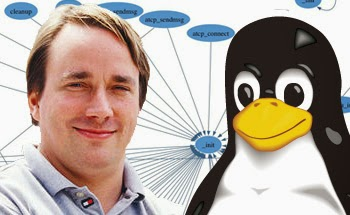

Linus Benedict Torvalds
Criador do Kernel Linux
Engenheiro de software finlandês, nascido em 28 de dezembro de 1969 na cidade de Helsinki, foi o criador do
Kernel do Linux, base fundamental para a criação de diversos s.o gratuitos como algumas distribuições Linux
Ubuntu, Debian, Fedora e etc, além de produtos do Google como Chrome OS e Android. Mais do que criador do Linux,
Torvalds é um defensor do software livre e do código aberto, modelo que o produto do desenvolvimento dos
programadores é liberado de forma gratuita, para uso, modificação, e exploração da comunidade. Tem uma famosa
frade de Torvalds que é - "código aberto é o único jeito certo de se fazer software", permanece até hoje como
integrante da Linux Foundation.
Além do Linux, o finlandês também é o criador do git, um software usado no desenvolvimento de programas para
controle de versão durante o processo de testes e compilações

Curiosidades
- Discussão para a criação do simbolo para o Linux, vários animais e formas abstratas, porém no fim ficou o
pinguim pois, Torvalds disse que gosta de pinguins.
- O pinguim foi ao espaço com a SpaceX, que usa o sistema operacional e linguagem C++ em muitos de seus
sistemas
- O primeiro Kernel do Linux tinha 65KB
- Linus Torvalds escreveu 100% do primeiro Kernel do Linux, e hoje tem menos de 1% restante.
Premios e conquistas
- Em 1998, ele recebeu o EFF Pioneer Award.
- Em 1999, ele recebeu o título de "um dos 100 principais inovadores, com menos de 35 anos de idade, no mundo"
pela MIT Technology Review TR100.
- Em 2000, ele recebeu a Medalha Lovelace, conferida pela British Computer Society.
- Em 2008, ele se tornou um membro do Hall of Fellows do Computer History Museum em Mountain View, Califórnia.
- Em 2012, ele foi incluído no Hall da Fama da Internet.
Clique aqui para saber mais